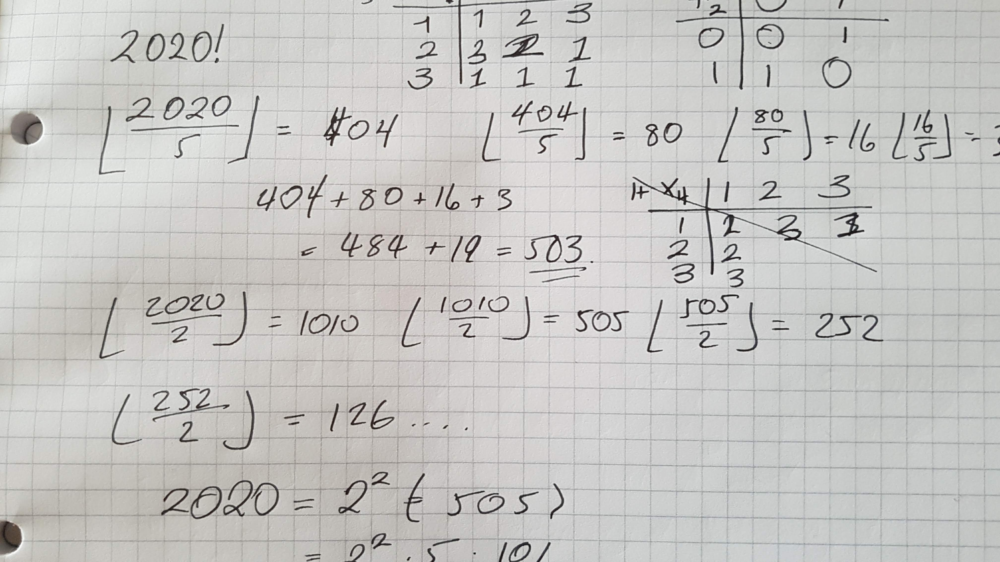

Monkey's living in trees
27 Jan 2020

So recently I have come across a wonderful problem, this is a very well known one to anybody that has taken a first year University Dynaimcs and or Mechanics course.
NOTE: There has been no monkeys hurt in the creation of this blog post.
So let us consider a monkey sitting in a tree, there is a poacher wanting to shoot this very rare and exotic monkey! He primes and aims his gun... the monkey releases
his hold of the tree and starts falling... BANG!...
Is the monkey dead?
This is the set up for the problem, so we can now look into the Mathematics behind this, to do so we shall need to go through some prerequisites:
Inertial Frames
An inertial frame is a mathematical object that is used in order to study a dynamical system, intuitively we can use it to cancel equal forces that are happening to similar objects, in this problem we shall treat the monkey and bullet as point particles and so they are similar.About Me

I am a Mathematical nutcase that is also a programmer, I spend a lot of time doing and thinking Maths, here are those musings along the way.